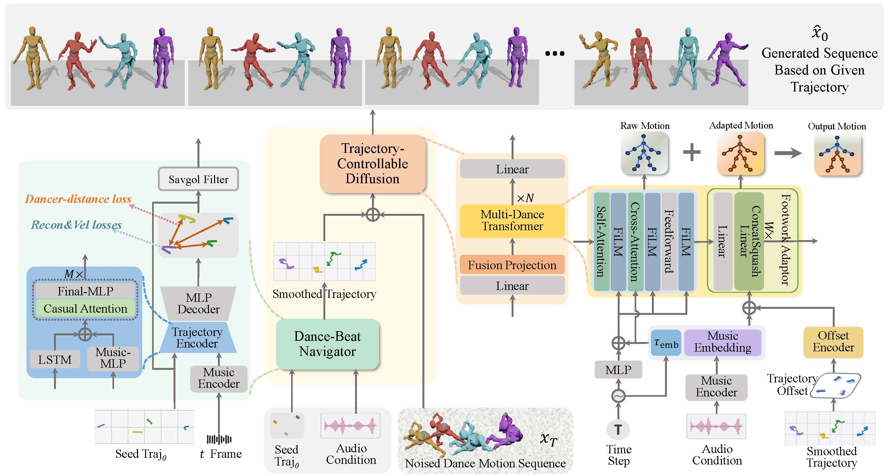

Our framework consists of two main components: the Dance-Beat Navigator (DBN) and Trajectory-Controllable Diffusion (TCDiff).
To address dancer ambiguity, initially, we employ DBN to model dancer positions, as dancers' coordinates exhibit distinct differences and are less prone to confusion.
Subsequently, TCDiff utilizes this result for conditional diffusion to generate corresponding dance movements.
During this process, a fusion projection enhances group information before inputting it into the multi-dance transformer, while a footwork adaptor adjusts the final footwork.